Instructions for working with the program can be found in the Appendix. It is recommended to read the text of the task and the Appendix completely before starting the measurements.
In the preparatory lectures we have already discussed diffusion in solids and its applications. This problem also discusses diffusion of impurities in solids, in particular, in polycrystals.
This part of the problem discusses the diffusion of impurity particles within the crystal lattice of a substance.
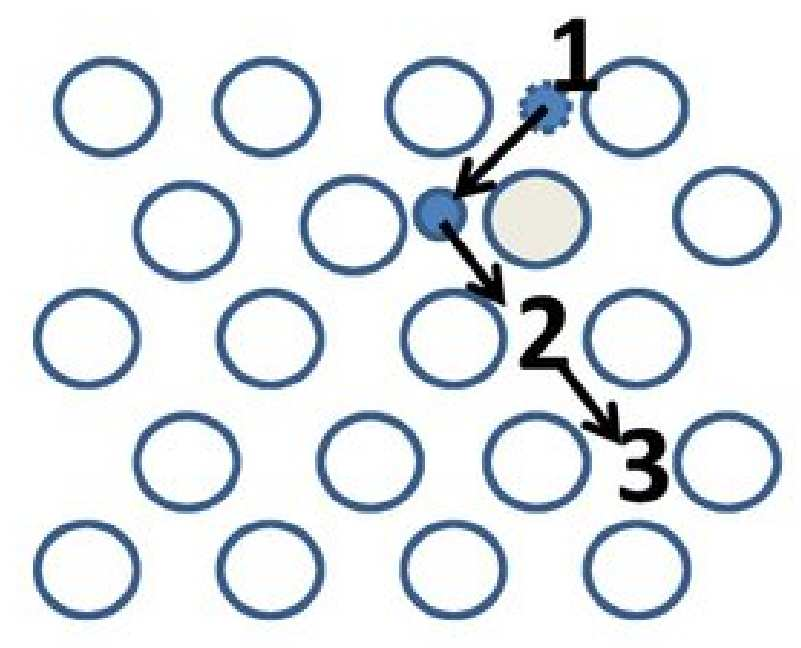
The diffusion process in a crystal lattice is carried out in most “ordinary” substances by the jump of diffusive impurity atoms between neighboring lattice cells. The impurity particles spend most of their time in the vicinity of the point where the potential energy of interaction between the impurity particle and the lattice atoms is minimal. The vicinity of such points is called inter‑nodes. Usually, the energy of impurity particles is low, so they can only jump between neighboring inter‑nodes. For this purpose, an energy barrier of at least $E_g$ must be overcome. The energy $E_g$ is called the activation energy. It is known from statistical physics that the probability of such a transition is proportional to $\exp(-E_g/kT)$. Moreover, the jump time between neighboring inter‑nodes should be inversely proportional to the characteristic particle velocity. Thus,
\[D \propto v\,\exp(-E_g/kT),\]where $v$ is the rms velocity associated with the thermal motion of impurity particles.
The program for Part A simulates the motion of impurity particles in the inter‑nodes for a cubic lattice. Select the number of particles to be simulated, as well as the temperature and simulation time. The program will output the root mean square of the particle displacement and its error among the simulations. All program inputs and outputs are made in arbitrary units.
In the remaining part of the problem, a solid of large dimensions with a flat boundary is modeled, on the surface of which some large number of impurity atoms are uniformly deposited. Over time, the impurity atoms diffuse into the substance. The result of the simulation is the concentration distribution $c$ of the impurity particles in the solid depending on the penetration depth $z$ of these particles.
If all solids were completely homogeneous bodies at the microscopic level, the problem of diffusion inside them would be trivial. However, most materials in their structure are many small single crystals — grains, on the boundaries between which the atoms of matter are arranged chaotically. Although this state does not have minimum energy, at normal temperatures it is still the most probable from a thermodynamic point of view. In particular, almost all metals are polycrystalline in nature (e.g., it is this mechanism that ensures their plasticity, as it allows parts of the crystal lattice to move relative to each other).
Since the atoms at the grain boundary are arranged chaotically and much more “loosely”, the movement of impurity atoms between them does not require such a large amount of energy as movement inside the lattice of a single crystal. Because of this, the diffusion coefficient at the grain boundary is much larger than inside the grains, which can noticeably affect the diffusion processes in a polycrystal. The purpose of Parts B and C of this problem is to investigate the phenomena that occur during polycrystalline diffusion.
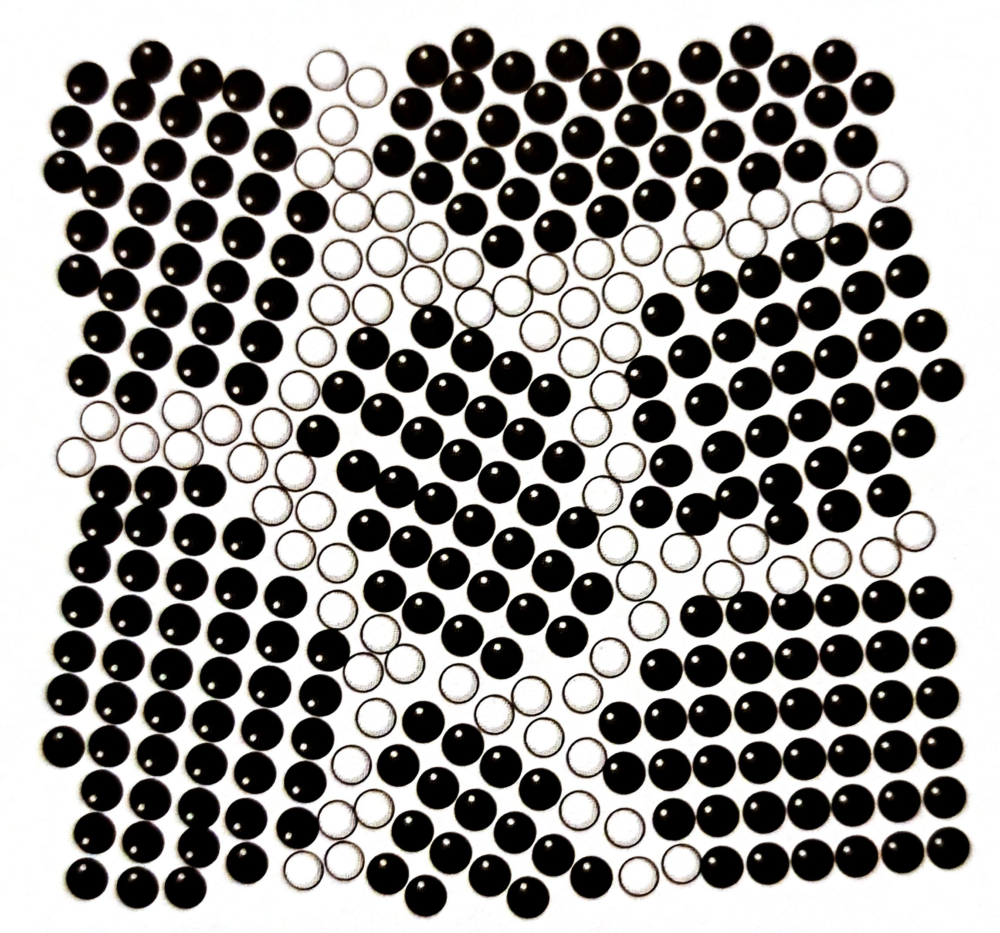
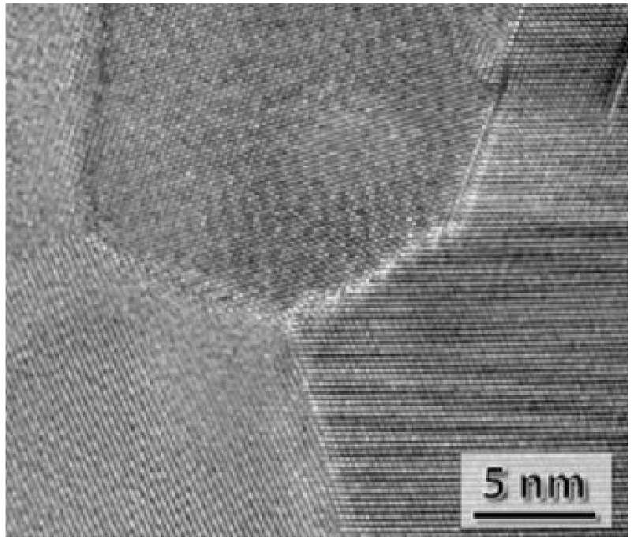
Diffusion processes in a polycrystal have three different regimes. They are called kinetic modes of type A, B, and C, respectively. The kinetic regime of type A is observed on the largest time scales, regime C — on the smallest. Mode B is intermediate between them. Only modes A and B are investigated in the problem. When the characteristic diffusion scale $\sim\sqrt{Dt}$ exceeds the grain size of the polycrystal, each atom of the “embedded” substance passes through a large number of grains. Due to this, diffusion proceeds in a single “front” and can be characterized by the effective diffusion coefficient $D_{eff}$, which depends on the coefficient of diffusion in grains $D$, at grain boundaries $D_{gb}$ and the relative volume $\delta$ occupied by the boundaries.
If the grain boundaries in a polycrystal were oriented exclusively along the diffusion, then the effective diffusion coefficient would be equal simply to the weighted average of $D$ and $D_{gb}$:
\[D_{eff} = D + \delta(D_{gb} - D).\]If the boundaries are oriented perpendicularly to the diffusion direction, then at $\delta \ll 1$ the effective diffusion coefficient would practically not change.
In a real polycrystal, the grain boundaries are oriented arbitrarily. Because of this, the effective diffusion coefficient differs from the measures given above. It is very difficult to solve precisely the problem of the effective diffusion coefficient in such a structure, and in reality one can only give an estimate in the limiting case $\delta \ll 1$, $D_{gb}/D \gg 1$:
\[D_{eff}/D = 1 + \alpha\delta(D_{gb}/D - 1).\]Let us try to estimate $\alpha$ in some approximation and then find it experimentally. The easiest way to estimate $\alpha$ is to take $D \to 0$ at $D_{gb} = \mathrm{const}$ and find $D_{eff}$ for some simple three-dimensional configuration of the polycrystal. For example, let us take a polycrystal consisting of cubic single crystals of size $a$ separated by boundaries of thickness $\delta a/3$. The effective diffusion coefficient can be estimated as the diffusion coefficient along one of the axes of the system (it will be the same along all three axes).
Let’s check the validity of the estimate with the help of the program. The program simulates an arbitrary polycrystalline structure. The program in Parts B and C takes as input values in relative units such that $a, D = 1$, and the time unit is $D/a^2$. You can adjust the diffusion coefficient at the boundary $D_{gb}$, the simulation time $t$ and the relative volume of the boundaries $\delta$.
Note: when performing the following item, consider it known that the distribution of the particle concentration $c$ over the penetration depth $z$ in the case of a homogeneous crystal with diffusion coefficient $D_{eff}$ would have the following form:
\[c(z) = \frac{N_0}{4\sqrt{\pi D_{eff} t}}\exp\!\left(-\frac{z^2}{4D_{eff}t}\right).\]Bavg.csv. This dependence can be analyzed with the program B.nb.Finally, it is worth noting that the coefficient $\alpha$ depends on the dimensionality of the space in which diffusion takes place.
In the previous parts of the problem, we considered the diffusion type at which the characteristic scales of diffusion are much larger than the size of inhomogeneities in the polycrystal. However, this is not the only diffusion mode that can be observed in a polycrystal. If the diffusion scales are much larger than the grain boundary width of the polycrystal and much smaller than the size of the grains themselves, diffusion of kinetic type B will occur.
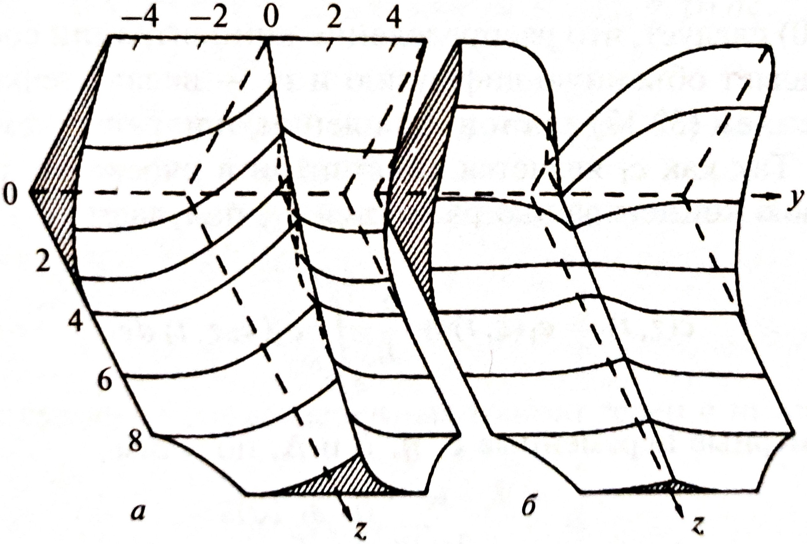
The main distinguishing characteristic of this type of diffusion is that the logarithm of the mean concentration $\bar c$ depends on the depth $z$ not quadratically, but to the degree $6/5$. This value is not analytically derived, but it is so well observed in the experiment that the presence of such a dependence is used as an indicator of the quality of the experiment! In spite of the “non-analyticity”, the parameters of the dependence $\ln\bar c(z^{6/5})$ are included in empirical relations with rather precisely known parameters. The remaining part of the problem will be devoted to the study of diffusion of type B and the relations arising there.
Even though the linear dependence of $\ln\bar c(z^{6/5})$ cannot be analytically obtained, the parameters of this dependence are unambiguously expressed through the input parameters of the problem (for physical reasons — from the dimensionless variables $\delta$, $D_{gb}/D$ and $Dt/a^2$, where $a^3$ is the volume of one grain of the polycrystal). It can be written:
\[\frac{d\ln c}{dz^{6/5}} = -C\,\delta^{\xi}\,a^{\psi}\left[\frac{D_{gb}}{D}\right]^{\eta}\left[\frac{Dt}{a^2}\right]^{\zeta}.\]Here $C$ is a numerical coefficient of order $\sim 10^0$.
Cavg.csv file contains the dependence of the logarithm of the average concentration $\ln\bar c$ of impurity particles on the penetration depth $z^{6/5}$, and the file Cmap.csv — the dependence of the logarithm of the concentration $\ln c$ on the penetration depth $z^{6/5}$ and the $y$ coordinate along the solid surface. These dependencies can be analyzed using the C.nb program.The software for the task is located in the ISPhO folder. The programs you will need are the following:
A.exeB.exeC.exeInteractiveBuffer.nbB.nbC.nbThe first three programs are used for modeling, the other three are used for visualization and processing of the obtained data.
Working with .exe Files with the .exe extension provide a command line interface. When the program is started, it asks for a set of input parameters:
A.exe is used in Part A. The program asks for the simulation time, crystal temperature and number of simulation repetitions. Time and temperature are measured in conventional units. The activation energy must be given in the same units! Increasing the number of repetitions and the simulation time increases the accuracy of the results but can be quite time-consuming. It is strongly recommended to run simulations with small values of these parameters first.B.exe is used in Part B. The program asks for the simulation time, the relative diffusion coefficient of impurity at the polycrystal grain boundary and the relative volume of the boundary. Usually, the simulation is quite fast.C.exe is used in Part C. The program asks for the same set of parameters but takes a bit more time because it simulates the effect on a much smaller scale. It may be worth planning measurements in this part.All programs display the expected simulation time. This may differ from the actual simulation time depending on the characteristics of your computer. Do not delete or edit the .csv files you create!
Working with .nb To quickly and conveniently visualize and process results, programs with the .nb extension (so-called “notebooks”) based on the Wolfram Mathematica computer algebra package are used.
InteractiveBuffer.nb is a simple program that can memorize the points entered into it, graph them and draw a line through them by the least squares method. The program exists as an “application tool” to solve the problem.B.nb is a tool that allows you to load actual simulation results from Part B, plot them as $\ln\bar c(z^2)$, and fit them to the requirements of the problem.C.nb is a tool that allows you to load actual simulation results from Part C, plot the $\ln\bar c(z^{6/5})$ dependence for them, and fit it according to the requirements of the problem. It also allows you to plot the detailed concentration distribution at the boundary of polycrystalline grains..nb files, it is strongly discouraged! In case you break the source code, there will be no help in returning it to the initial state!InteractiveBuffer.nb example To make working with Wolfram Mathematica easier for Olympiad participants, this appendix will provide a step-by-step guide to one of the programs, InteractiveBuffer.nb. After opening the file, its contents should appear on the screen (the details may look different depending on the WM version):
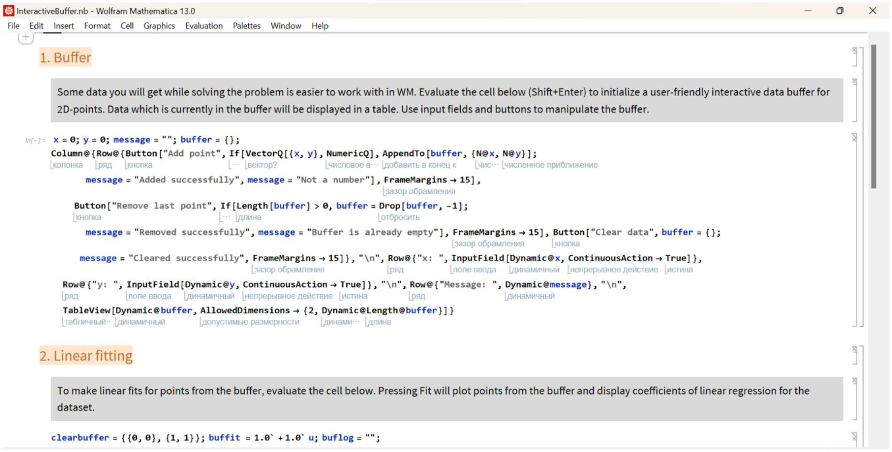
Click anywhere in the code cell and press Shift+Enter. This will execute the code in the cell. A new cell will appear at the bottom and will look like this:
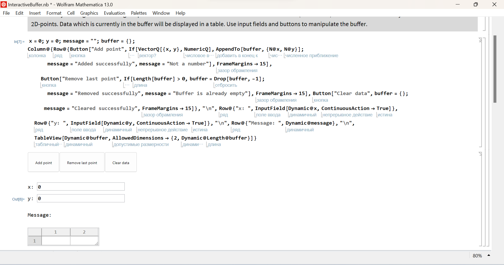
This is the interactive buffer that you can work with when solving the problem. You can enter $x$ and $y$ coordinates in the interactive input fields. If you then press the Add point button, these values are added to the buffer:
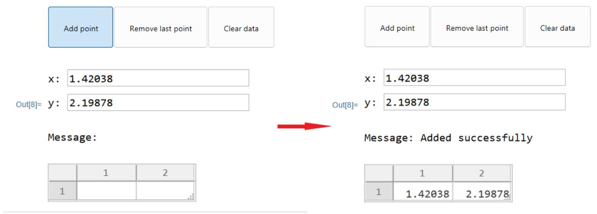
In case of adding an incorrect point to the buffer, the program provides the possibility to remove the last point in the buffer. To do this, click the Remove last point button:
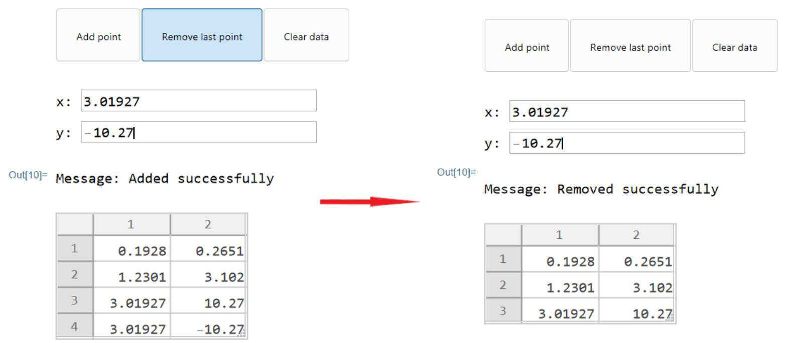
To completely clear the buffer, click Clear data:
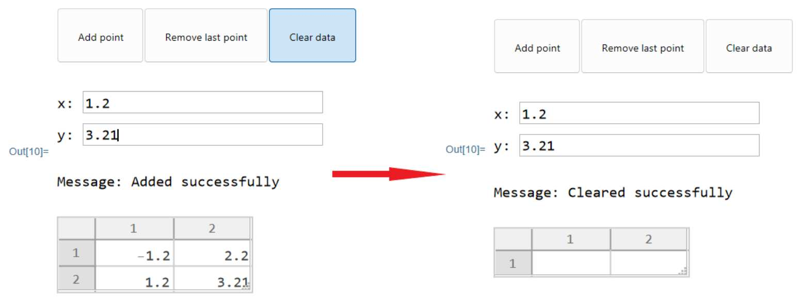
After filling the buffer with the required points, evaluate the cell in the second section. The result will look as follows:
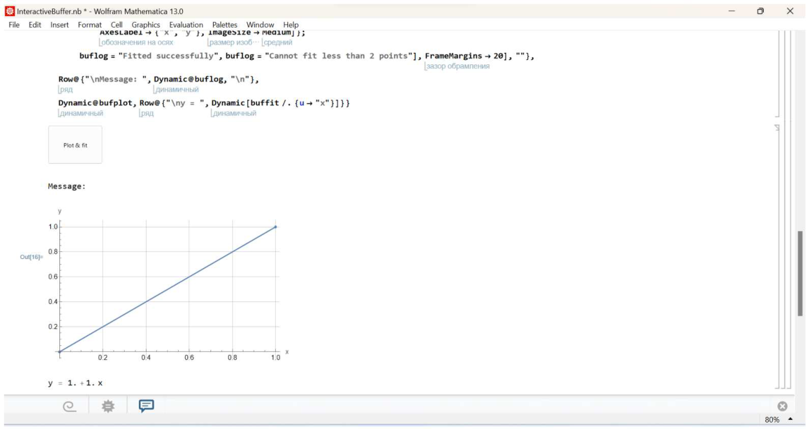
If you press the Plot fit button, the program will plot the points from the buffer and calculate linear regression coefficients for them. An example of the buffer contents and the corresponding fit result:
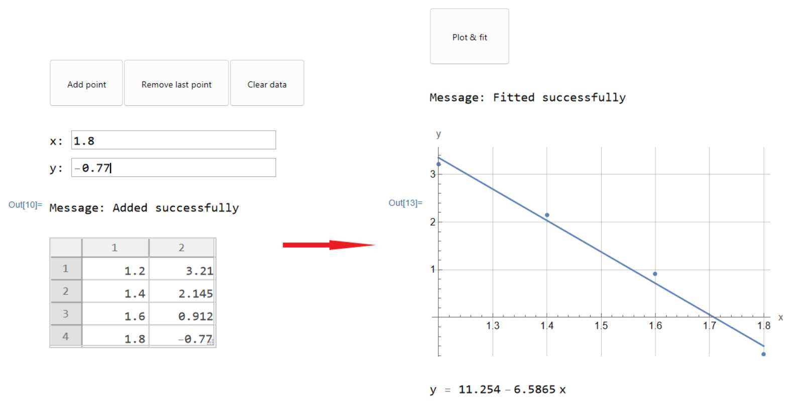
The rest of the .nb files look and work in a similar way, with comments and an intuitive interface.